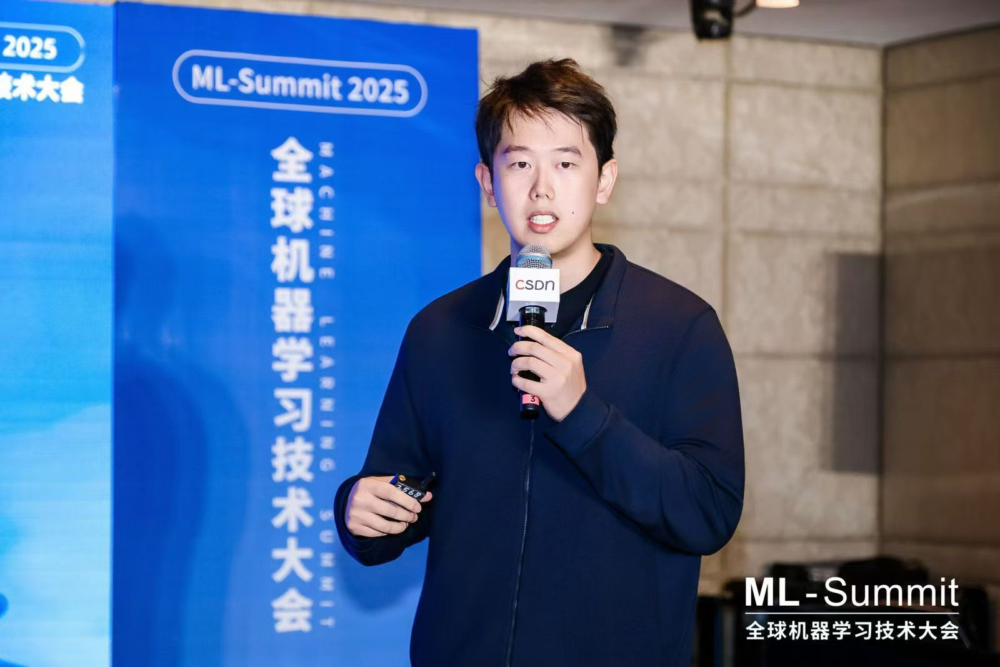

Peiyu Wang (王沛雨)
Research Engineer & Tech Lead, Skywork AI
About
I've been involved in the full pipeline of foundation model development — pre-training, supervised fine-tuning, RL alignment, evaluation, and production deployment. My work spans:
- Video Generation: Co-developed SkyReels V4, 1080p/32FPS with full-modal RL
- World Models: Built Matrix-Game 3.0, 720p/40FPS real-time streaming
- Agent Systems: Developed SkyClaw-v1.0 with million-token context
- Multimodal Reasoning: Contributed to R1V Series & UniPic Series
Experience
2024 – Present
Research Engineer & Tech Lead
Skywork AI
2023 – 2024
Research Engineer
Zhipu AI (智谱AI)
2021 – 2023
Recommendation System Engineer
Xiaohongshu (小红书)
2020 – 2021
MSc Data Science
University College London (UCL)
Selected Projects
| SkyReels V4 Video | Multimodal video generation with full-modal RL. #1 on Artificial Analysis for text-to-video with audio. |
| Matrix-Game 3.0 World | Memory-augmented interactive world model for real-time streaming. [arXiv] |
| SkyClaw-v1.0 Agent | Agent model with million-token context for tool use and code generation. |
| R1V Series VLM | 38B VLM with multimodal chain-of-thought reasoning. [arXiv] |
| UniPic Series Unified | 1.5B unified model for image understanding, generation, and editing. [arXiv] |
| VL Reward Model Reward | Multimodal reward model for RL alignment of MLLMs. [arXiv] |
| Super Agents Agent | End-to-end agent system for autonomous task execution. |
| RED Recommendation RecSys | Large-scale ranking, retrieval, and multi-objective optimization at Xiaohongshu. |
News
Media Coverage
SkyReels V4
Research Interests
- Large-scale language models: pre-training, RL alignment, and evaluation
- Multimodal foundation models: reasoning, generation, and unified architectures
- World models: interactive simulation and robotic embodiment
- Agent systems: autonomous decision-making and tool orchestration
Contribution Activity